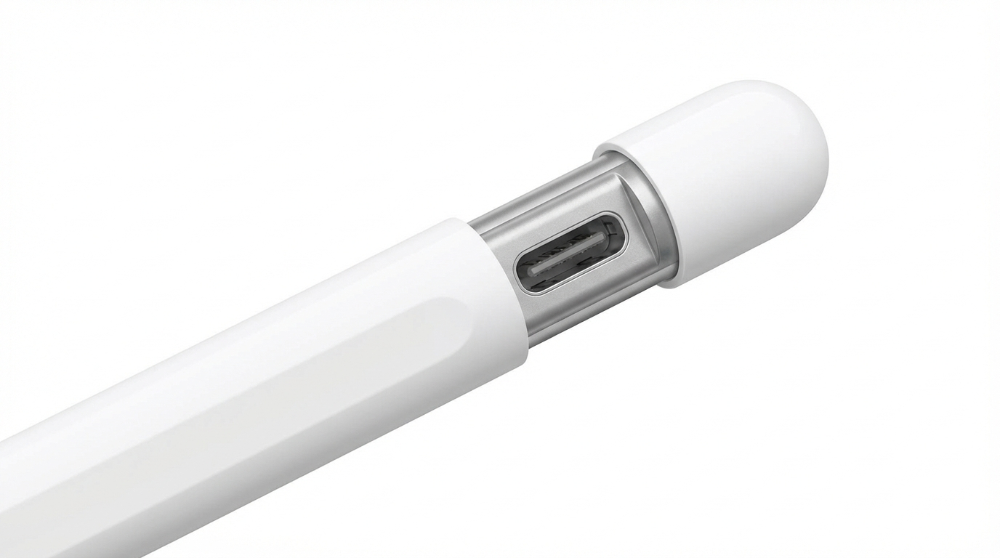
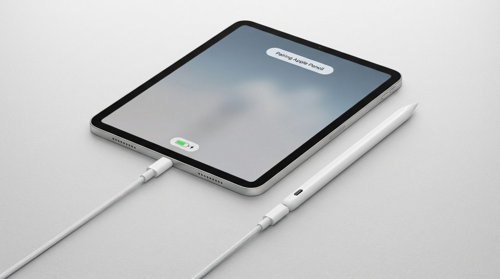
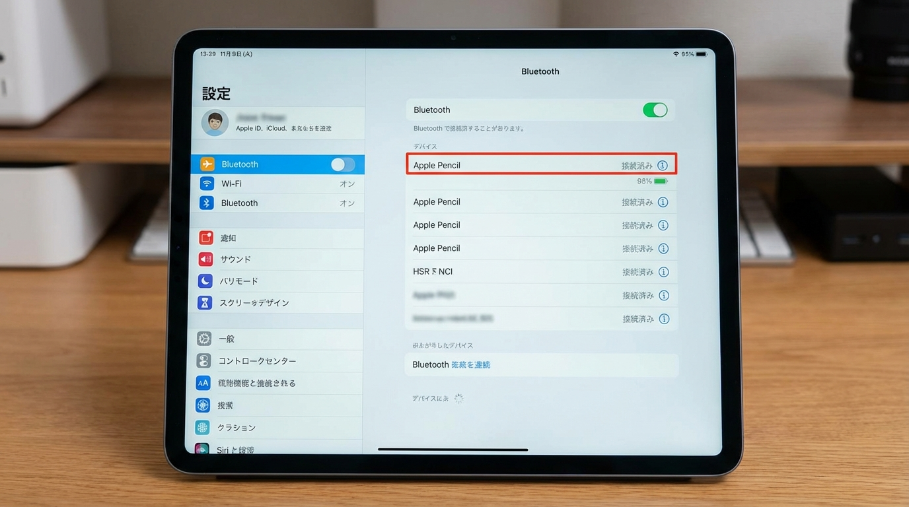
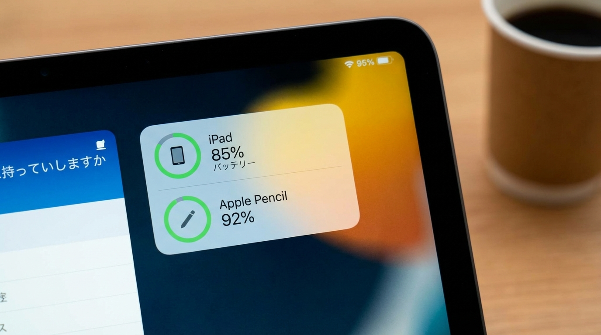

✏️ このページでは、Apple Pencil（USB-C）とiPadを接続する方法をご案内します。
USB-Cケーブルを使って簡単にペアリングと充電ができます。
📱 お使いのApple Pencil
型番：MUWA3ZA/A（Apple Pencil USB-C）
特徴：
- 上部をスライドするとUSB-C充電ポートが出てきます
- USB-Cケーブルで接続・充電します
- 磁石でiPadの側面に装着できます（充電はできません）
- 筆圧感知、傾き検知に対応
1
Apple Pencilのキャップをスライドする
Apple Pencilの上部のキャップをスライドさせると、USB-C充電ポートが現れます。
キャップは完全に外れないので、紛失の心配がありません。
💡 ポイント
キャップは引っ張って外すのではなく、横にスライドさせてください。
無理に引っ張ると壊れる可能性があるので注意しましょう。
無理に引っ張ると壊れる可能性があるので注意しましょう。
2
USB-CケーブルでiPadと接続する
USB-Cケーブルを使って、Apple PencilとiPadを接続します。
-
USB-Cケーブルを用意
iPad付属のUSB-Cケーブル、または市販のUSB-Cケーブルを使用します。 -
Apple Pencilに接続
ケーブルの一方をApple PencilのUSB-Cポートに差し込みます。 -
iPadに接続
ケーブルのもう一方をiPadのUSB-Cポート（下部または側面）に差し込みます。
💡 ポイント
接続すると、画面に「Bluetoothペアリングの要求」が表示されます。
「ペアリング」または「接続」をタップしてください。
「ペアリング」または「接続」をタップしてください。
3
ペアリング完了を確認する
ペアリングが成功すると、画面の上部に「Apple Pencil 接続済み」という通知が表示されます。

✅ 確認方法
メモアプリやノートアプリを開いて、Apple Pencilで何か書いてみてください。
書けたら、接続は成功です！
書けたら、接続は成功です！
4
充電とバッテリー残量の確認
Apple Pencil（USB-C）の充電とバッテリー残量の確認方法です。
🔋 充電方法
-
USB-Cケーブルで充電
ステップ2と同じ方法で、Apple PencilとiPad（または充電アダプター）を接続します。 -
充電時間
フル充電まで約20分。約1分の充電で約30分使用できます。 -
バッテリー持続時間
フル充電で約12時間使用可能です。
📊 バッテリー残量の確認
-
ウィジェットで確認
iPadのホーム画面を右にスワイプして、バッテリーウィジェットを表示します。 -
設定から確認
設定 → Bluetooth → Apple Pencilの横に表示されるバッテリー残量を確認できます。
⚠️ 注意
Apple Pencil（USB-C）は、iPadの側面に磁石で装着できますが、装着しているだけでは充電されません。
充電するには、必ずUSB-Cケーブルを使用してください。
充電するには、必ずUSB-Cケーブルを使用してください。
💡 知っておくと便利なこと
- 2回目以降は自動接続：一度ペアリングすれば、次回からはApple Pencilを使おうとするだけで自動的に接続されます。
- 磁石での装着：iPadの側面に磁石で装着できるので、持ち運びに便利です（充電はできません）。
- 複数のiPadでの使用：毎日違うiPadを使う場合は、USB-Cケーブルで接続し直せば、簡単にペアリングできます。
- USB-Cアダプター：USB-C充電アダプターを使えば、iPadに接続しなくても単体で充電できます。
- バッテリー残量の確認：使い始める前にバッテリー残量を確認する習慣をつけましょう。
🔧 困ったときは
-
Q: Apple Pencilが反応しない
A: まず、バッテリー残量を確認してください。充電が必要な場合は、USB-Cケーブルで充電してください。 -
Q: ペアリングできない
A: iPadのBluetoothがオンになっているか確認してください。また、iPadを再起動すると改善することがあります。 -
Q: USB-Cケーブルで接続しても充電されない
A: ケーブルがしっかり差し込まれているか確認してください。別のUSB-Cケーブルを試してみることもおすすめです。 -
Q: キャップが開かない
A: キャップは引っ張るのではなく、横にスライドさせてください。力を入れすぎると壊れる可能性があるので、優しく操作してください。 -
Q: 書いているときに線が途切れる
A: Apple Pencilのペン先が緩んでいる可能性があります。時計回りに締めてください。または、ペン先が摩耗している場合は交換が必要です。 -
Q: 別のiPadとペアリングし直したい
A: 新しいiPadにUSB-Cケーブルで接続するだけで、自動的に切り替わります。前のiPadとのペアリングは自動的に解除されます。 -
Q: それでも解決しない場合
A: 情報システム部門（内線: XXXX / メール: [email protected]）にお問い合わせください。